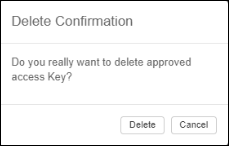

After you log in to ACM, you can delete an access key in the User
Details
pane.
Note: You can only manage your own access keys, not those for other
users.
To delete an access key, do these steps:
-
Log in to ACM.
The User Details pane appears for the logged in user. For example:The access key fields are located at the bottom of the User Details pane.

User Details Pane
-
In the Actions column, click the
 Delete icon in the row for the access key you want to
delete.
A delete confirmation message appears:
Delete icon in the row for the access key you want to
delete.
A delete confirmation message appears:
Delete Confirmation Message